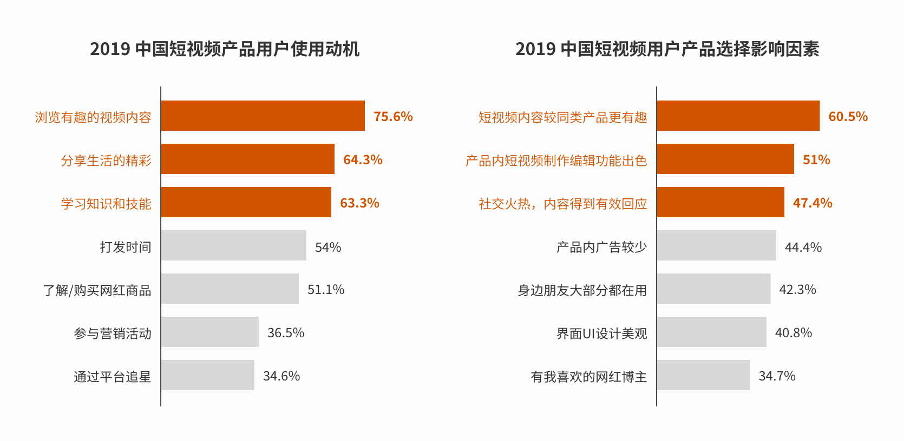
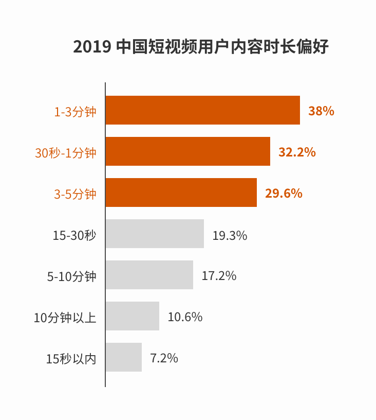
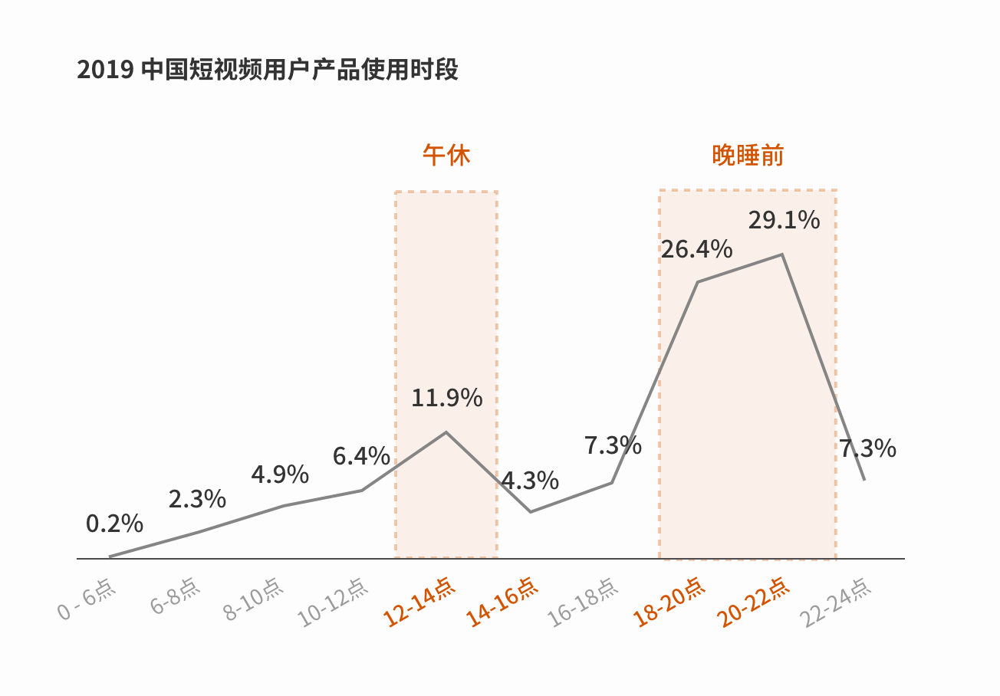
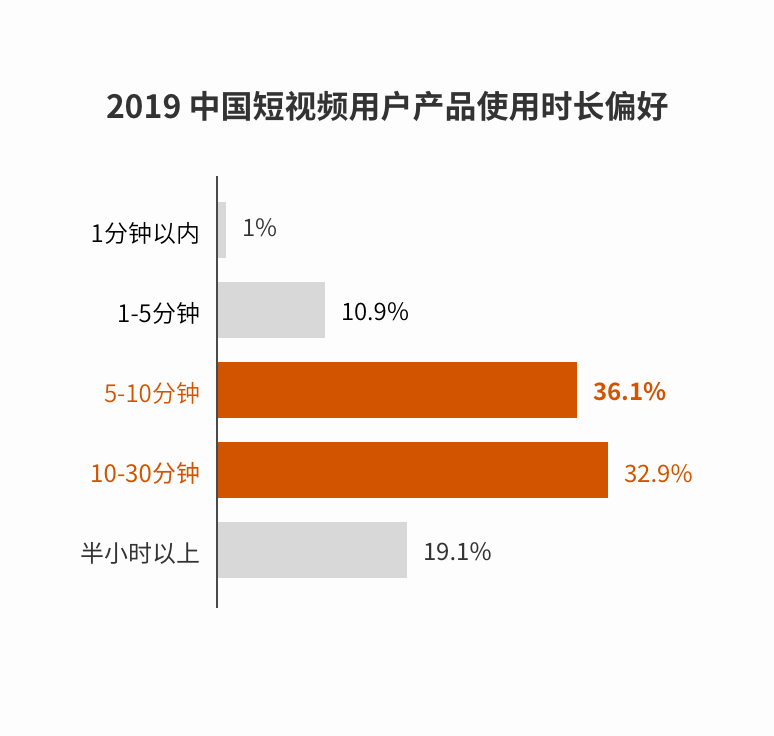
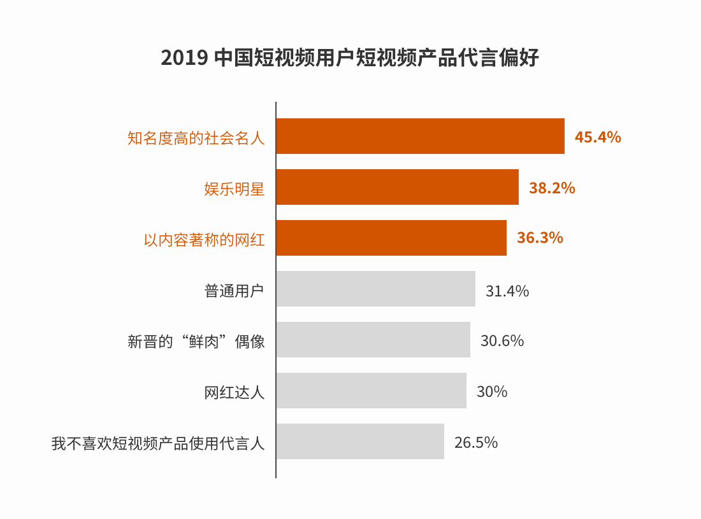
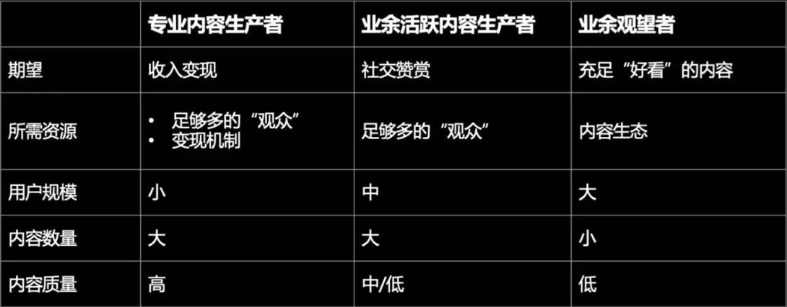

短视频背景探索与微信视频号理念分析
报告数据源于微信公开课与专业科技媒体的分析报告。
TIP：本页面采用了 APPLE 的主题适配技术，苹果设备可通过系统更换 明/暗 主题。
TIP：本页面的图片使用了交错式 PNG，部分过于传统的浏览器版本可能无法支持这一特性。
目的
流程
一、背景研究
在“视频号”相关的线上调研中逐渐明确了视频号及其在微信中的定位，以及它能够赋予用户的价值。
视频号基于微信，要为视频号做设计，首先应认清和秉持微信平台的设计理念和规则，所以在背景研究阶段，需要依次弄清三方面的知识：
微信的设计理念
从简单开始演化：我们的产品人说，产品经理知道人们的欲望，然后给他们定制一些规则，让他们按照这个规则运转，规则很简单，只有简单的规则才能演化出非常复杂的事情，而不是像很多其他产品，一开始就做一个复杂的规则，最后没有任何演化的空间。
尊重用户：平台一直希望去尊重用户，其中一个体现是微信会尽可能不会去影响各个服务的存在，微信做的是尽可能让更有价值的服务自己能够浮现出来被用户找到，而不是去左右。这也印证了去中心化的一个设计思想：通过社交推荐来获取信息是最符合人性的。
信息来源于微信公开课与专业科技媒体的分析报告。
视频号的定位
口号：高效便捷、记录真实生活。
视频号是一个人人可以记录和创作的平台，也是一个了解他人、了解世界的窗口。机构和个人都可以加入视频号，通过用 1 分钟内的视频，或者 9 张以内的图片随时随地发挥创造，和更多人分享生活和世界。在这里，你还可以发现更多有意思的人和内容，关注感兴趣的视频号主，点赞、评论进行互动，也可以转发到朋友圈、聊天场景，与好友分享在这里看到的内容。
视频号的战略地位可能是用来弥补微信之前短内容/短视频的空缺，让每个人都可以平等创作和分享，辅助现有的微信公众号平台，服务每一个想要创作或者分享的人，给他们提供更完善的选择，目的是丰富微信这个工具。
信息来源于微信公开课与专业科技媒体的分析报告。
短视频用户画像
数据和信息来源于艾瑞 Usertracker 针对 2019 年的短视频用户检测数据。
使用短视频应用的动机 & 影响短视频应用选择的因素
用户使用短视频最大的三个动机是：
而从影响用户选择短视频应用的因素来看，较同类更有趣的内容、好用的视频编辑功能以及火热的互动是用户主要的考虑的因素。

数据和信息来源于艾瑞 Usertracker 针对 2019 年的短视频用户检测数据。
视频内容偏好 & 使用时长偏好
除搞笑幽默、生活美食外，知识技巧是最短视频受欢迎的品类之一；63.3% 的用户因“学习知识与技能”的原因开始使用短视频产品，而 55.5% 的用户表示喜欢 ”技巧/知识类” 短视频内容。
从时长来看，1-3分钟的短视频最受欢迎，3-5分钟内容过长，用户接受程度一般。

数据和信息来源于艾瑞 Usertracker 针对 2019 年的短视频用户检测数据。
使用时机、时长与场景偏好
用户使用时间普遍集中于午休和晚睡前，他们的使用时长集中在 5-10 分钟与 10-30 分钟，而 30 分钟以上与 5 分钟以内的用户仅为两成。


数据和信息来源于艾瑞 Usertracker 针对 2019 年的短视频用户检测数据。
工具的使用频次
近三成用户每天使用 2-5 次短视频产品，每天使用 10 次以上的用户占比 13.1%；
数据和信息来源于艾瑞 Usertracker 针对 2019 年的短视频用户检测数据。
互动性 & 广告内容风格偏好
用户最常使用的互动方式是“一键操作”（赞、分享、收藏），其次是评论及私信。
产品代言偏好上，知名度较高的社会名人、娱乐明星以及以内容著称的网红具有更强的号召力，其产品代言更容易被用户接受。
短视频形式的广告具有最好的接受度，同时“幽默搞笑风格”的广告短视频仍是最被用户偏爱。

数据和信息来源于艾瑞 Usertracker 针对 2019 年的短视频用户检测数据。
二、定义设计原则
如要提高“视频编辑”人员的内容质量，那么在三类短视频内容的生产者中，“业余活跃内容生产者群体” 可能是最容易达到提升效果群体，因为他们不仅有着较“专业内容生产者” 更大的内容质量提升空间，而且他们普遍已经具备了一些最基础的短视频制作基础。

图片来源于微信公众号：产品一二三
基于背景分析，我尝试总结了几个视频号的原则性关键词，用以指引后续的思路呈现：
三、思路呈现
在“背景研究”以及“视频号设计原则”的基础上，我设想的“提高用户生产内容质量”思路分为三步：
该思路借助了短视频相较于其他媒体形式更简练、快捷、生动的优势，让用户对于技巧性、实用性强的知识内容有着更强的接受性，在此基础上我们又添加了“有趣”这种用户最偏爱的短视频属性，这会使得所有三类短视频内容的生产者都会愿意驻足观看、传播、互动；
可预见的是，在未来随着越来越多的传播，即使是用户规模最大的“业余观望者用户群”也可能会尝试和模仿我们短视频中使用的“手机拍摄技巧”或“短视频的编辑工具窍门” 来进行创作。而针对“业余活跃内容生产者群体”来说，他们可以根据这些“示范”来提升自己的创作质量；
初步的思路秉持了产品人“从简单开始演化”的设计思想，它是“温和保守”的，它并没有影响现阶段用户对“视频号”的交互体验，而且它是有“余地”的，用户如果不喜欢，在选择了“不喜欢”以后，我们会减少推荐。
优化用户体验
为了尽可能的避免用户“不喜欢”，结合背景分析，我们可以做出以下体验上的优化，让用户为该类内容“点赞”：
除此之外，官方在短视频中还可以考虑插入相关公众号链接，来满足喜欢通过图文学习技巧的用户，这样还有利于体现视频号能够与公众号的联通特性，让更多创作者，特别是垂直领域专业创作者知晓可以使用“短视频 + 写作”的方式更立体的体现个人品牌价值。
完。